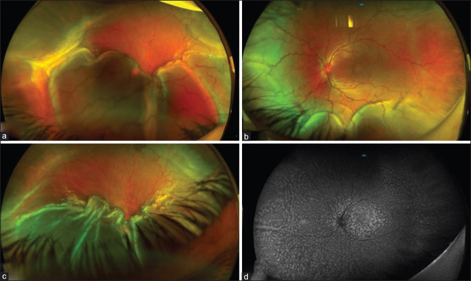
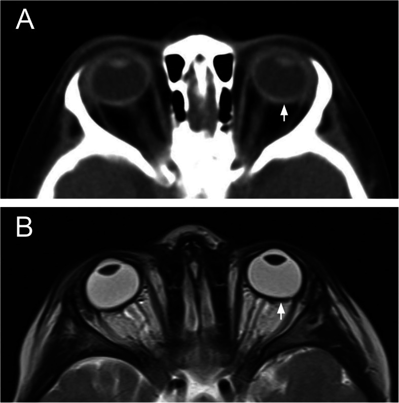
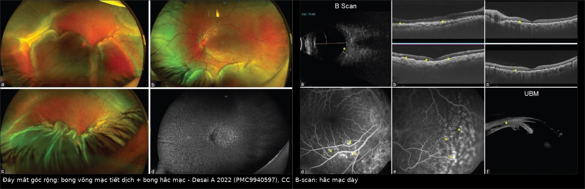
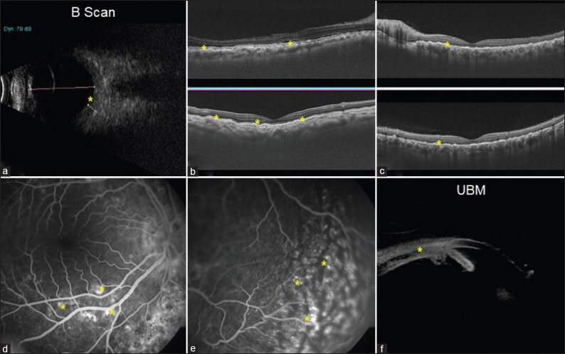
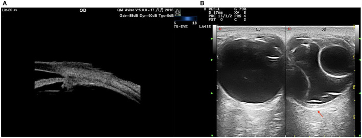

418 — Nanophthalmos & hội chứng tràn dịch hắc mạc: mắt nhỏ, củng mạc dày, dịch thoát không được / Nanophthalmos & uveal effusion syndrome (UES)
Tags: pattern:nhan-cau-ngan pattern:cung-mac-day pattern:tran-dich-hac-mac pattern:bong-vong-mac-tiet-dich vung:mat vung:cung-mac vung:hac-mac vung:nhan-cau protocol:B-scan protocol:UBM protocol:MRI-hoc-mat protocol:OCT-EDI
Mức chắc chắn (certainty): tổng hợp y văn (literature synthesis) — 1 đoàn hệ phẫu thuật 106 mắt (Front Med 2022), 1 loạt 25 mắt có thuật toán điều trị (Indian J Ophthalmol 2022), 1 ca CT–MRI nanophthalmos (BMC Ophthalmol 2020), 1 ca đơn (Case Rep Ophthalmol 2024), 1 tổng quan hệ thống về phẫu thuật củng mạc (Graefes Arch 2025) và 1 phân tích gộp glaucoma (2025). Số liệu lấy từ toàn văn/bảng, không lấy từ abstract.
1. Tổng quan — vì sao "mắt nhỏ" lại ứ dịch sau hắc mạc
- Định nghĩa (phải nhớ bằng số):
- Nanophthalmos: trục nhãn cầu (axial length, AL) < 20,5 mm (một số tác giả dùng < 20 mm**), kèm **viễn thị cao > +5 D (tiêu chuẩn chọn bệnh hay dùng > +7 D) và/hoặc giác mạc nhỏ (microcornea), tiền phòng nông (ACD < 2,2 mm); mắt nhỏ nhưng cấu trúc nhãn cầu về cơ bản đủ thành phần.
- Nanophthalmos phức tạp (complex): kèm dị tật khác (coloboma, PFV, hội chứng di truyền — MFRP, PRSS56, TMEM98, MYRF).
- Hội chứng tràn dịch hắc mạc (uveal effusion syndrome, UES): tràn dịch vào khoang trên hắc mạc (suprachoroidal) gây bong hắc mạc (choroidal detachment) + bong võng mạc tiết dịch (exudative retinal detachment), tái phát, không có nguyên nhân viêm/u/toàn thân rõ — là chẩn đoán loại trừ.
- Phân loại UES: type 1 — có nanophthalmos; type 2 — AL bình thường nhưng củng mạc bất thường; type 3 — AL và củng mạc bình thường (một số tác giả gộp type 2–3).
- Cơ chế (pathophysiology) — TẠI SAO dịch ứ lại:
- Củng mạc nanophthalmos dày, collagen xếp rối loạn, lắng đọng proteoglycan/GAG → tăng trở lực thoát dịch xuyên củng mạc và chèn ép tĩnh mạch xoáy (vortex veins).
- Hệ quả: ứ máu hắc mạc → tăng tính thấm → dịch protein cao vào khoang trên hắc mạc; hắc mạc dày (trung bình 1,74 ± 0,38 mm trên B-scan), củng mạc dày 2,1–3,2 mm trên siêu âm màu (color Doppler ultrasound).
- Vòng xoắn bệnh sinh: hắc mạc dày + củng mạc cứng → góc tiền phòng hẹp → glaucoma góc đóng; mổ nội nhãn trên mắt này dễ bùng phát tràn dịch và glaucoma ác tính.
- TẠI SAO nhìn thấy trên từng phương thức (vật lý):
- CT: củng mạc là collagen đặc → tăng đậm độ (khoảng 80–120 HU, cao hơn nhiều so với dịch kính 0–10 HU) → thấy dải củng mạc dày và AL ngắn. CT không cần gây mê dài nhưng có bức xạ.
- MRI T2: củng mạc giảm tín hiệu (collagen ít proton tự do), dịch (nước) tăng tín hiệu mạnh → dải tối dày quanh nhãn cầu + dịch sáng dưới hắc mạc/dưới võng mạc; trên T1, củng mạc tối, mỡ hốc mắt sáng nên dễ đo độ dày củng mạc.
- Siêu âm B-scan 10 MHz: dịch trên hắc mạc không hồi âm, đẩy hắc mạc vào trong → bong hắc mạc hình vòm; đo độ dày hắc mạc và độ dày củng mạc; đây là phương tiện theo dõi điều trị chính.
- UBM 35–50 MHz: phân giải cao, thấy phù thể mi, dịch quanh thể mi, góc tiền phòng hẹp — nơi B-scan 10 MHz không đủ phân giải.
- OCT EDI (enhanced depth imaging): đo độ dày hắc mạc dưới hoàng điểm, thấy dịch dưới võng mạc, nếp gấp võng mạc, dải dưới võng mạc; nhưng không xuyên qua củng mạc dày để đo củng mạc.
- Ngưỡng định lượng phải nhớ:
- Tần suất UES: 1,2/10.000.000 người/năm (ước tính Anh) — bệnh rất hiếm nhưng không được bỏ sót vì mù hai mắt.
- Glaucoma ở nanophthalmos: 51,88% (95% CI 33,33–70,43) — phân tích gộp 44 nghiên cứu, 1.397 mắt; AL càng ngắn càng nguy cơ (meta-regression).
- Type 1: AL 15,83 ± 1,45 mm, viễn thị +12,6 D; type 2: AL 23,45 ± 1,68 mm (Zhou 2022, 106 mắt).
- Phẫu thuật củng mạc: 96,2% thành công sau 1 lần mổ, 98,1% dính lại trong 6 tháng, 100% sau 1–2 lần (Zhou 2022).
- Ca minh họa: nam 59 tuổi, +17,25 D, AL 16,28 mm (P) / 16,12 mm (T), hắc mạc dưới hoàng điểm 607/594 µm — gấp đôi–ba lần bình thường.
2. Mẫu hình + chẩn đoán phân biệt theo vị trí (gamut)
- Mẫu hình A — "nhãn cầu ngắn, tiền phòng nông, góc đóng": nanophthalmos đơn thuần, nanophthalmos + glaucoma góc đóng cấp/tái diễn, glaucoma ác tính sau mổ.
- Mẫu hình B — "bong hắc mạc + bong võng mạc tiết dịch, không đau": UES type 1 (nanophthalmos) hoặc type 2 (AL bình thường, củng mạc dày); bong hắc mạc tự phát; bong thanh dịch sau mổ nội nhãn.
- Mẫu hình C — "bong võng mạc tiết dịch hai bên + viêm": VKH (bệnh Vogt–Koyanagi–Harada), viêm củng mạc sau (posterior scleritis), viêm màng bồ đào — có viêm, đau, dấu hiệu toàn thân.
- Mẫu hình D — "dịch dưới hắc mạc do thuốc/thủ thuật": topiramate, acetazolamide, brimonidine, hydrochlorothiazide; sau phaco/trabeculectomy; hạ nhãn áp (hypotony); rò động mạch cảnh – xoang hang (CCF).
- Gamut theo vị trí:
- Củng mạc: dày bẩm sinh (nanophthalmos), viêm củng mạc sau, xơ hóa sau xạ, sau đai củng mạc.
- Khoang trên hắc mạc: tràn dịch (UES, thuốc, sau mổ, viêm), máu (chấn thương), u (melanoma lan tỏa).
- Hắc mạc: dày (pachychoroid, UES), u (melanoma, di căn, lymphoma), viêm (VKH).
- Võng mạc: bong tiết dịch, nếp gấp hoàng điểm, "leopard spot" ở RPE (UES mạn).
- Thể mi/góc: phù thể mi, góc hẹp, glaucoma ác tính.

(a) Bong võng mạc tiết dịch; (b) bong võng mạc kèm bong hắc mạc; (c) nếp gấp võng mạc và thay đổi sắc tố RPE; (d) FAF "leopard spot". Nguồn: Desai A và cs, Indian J Ophthalmol 2022 (PMC9940597) Fig. 2, CC BY-NC-SA 4.0.3. Bảng so sánh phân biệt (ma trận đối chiếu)
| Thực thể (entity) | Hình ảnh điển hình | Chốt vào (rule-in) | Chốt loại (rule-out) | Gợi ý xác nhận |
|---|---|---|---|---|
| Nanophthalmos + UES type 1 | AL < 20,5 mm + giác mạc nhỏ + hắc mạc dày + củng mạc dày; bong hắc mạc vòm + bong võng mạc tiết dịch; "leopard spot" ở RPE khi mạn | AL ngắn + củng mạc ≥ 2 mm trên siêu âm + dịch trên hắc mạc, không viêm | AL bình thường + củng mạc mỏng → không phải type 1; có viêm/đau → VKH/viêm củng mạc | B-scan + UBM + AL bằng IOL Master; OCT EDI; loại trừ nguyên nhân |
| UES type 2 (không nanophthalmos) | AL ≥ 21 mm nhưng củng mạc dày, tĩnh mạch thượng củng mạc giãn, bong hắc mạc/võng mạc tiết dịch tái phát | Củng mạc dày + AL bình thường + không nguyên nhân khác | AL ngắn → type 1; viêm/toàn thân → bệnh khác | Siêu âm màu đo củng mạc; B-scan; đáp ứng với mổ củng mạc |
| VKH (bệnh Vogt–Koyanagi–Harada) | Bong võng mạc thanh dịch hai bên, đĩa thị sung huyết, hắc mạc dày lan tỏa, tiền phòng có tế bào; đau đầu, ù tai, cứng gáy | Bệnh cảnh viêm + tổn thương hai bên + đáp ứng corticoid nhanh | Không viêm, không đau, AL ngắn, củng mạc dày → UES | Khám mắt + OCT/FA/ICGA; xét nghiệm viêm; hỏi triệu chứng toàn thân |
| Viêm củng mạc sau (posterior scleritis) | Củng mạc/hắc mạc dày khu trú, dấu T (T-sign) trên B-scan, dịch dưới võng mạc, đau khi liếc | Đau + T-sign + dày củng mạc khu trú + đáp ứng NSAID/corticoid | Không đau, dày đối xứng, AL ngắn → UES | B-scan, MRI hốc mắt; CRP/ESR; thử điều trị |
| Tràn dịch do thuốc (topiramate...) | Cận thị cấp hai bên, tiền phòng nông, bong hắc mạc/võng mạc thanh dịch, AL không ngắn | Khởi phát sau khởi trị thuốc vài ngày–tuần + cận thị cấp + hết khi ngừng thuốc | AL < 20,5 mm + củng mạc dày → nanophthalmos/UES | Hỏi thuốc; theo dõi sau ngừng; siêu âm |
| Glaucoma ác tính sau mổ | Tiền phòng dẹt/flat + nhãn áp cao, thể thủy tinh – mống mắt bị đẩy ra trước, không có bong hắc mạc | Tiền phòng dẹt + IOP cao sau mổ nội nhãn | Có bong hắc mạc/dịch trên hắc mạc → UES | UBM xác định thể mi, tiền phòng; hỏi mổ gần đây |

CT trục (a): củng mạc tăng đậm độ (mũi tên trắng) và nhãn cầu ngắn; MRI T2 trục (b): củng mạc giảm tín hiệu dày (mũi tên trắng) — cùng một bệnh nhi 3 tuổi có AL 18,1/18,3 mm, giác mạc nhỏ, thể thủy tinh to. Nguồn: Hagedorn J và cs, BMC Ophthalmol 2020 (PMC7528587) Fig. 2, CC BY 4.0.
Trái: bong võng mạc tiết dịch + bong hắc mạc (b), nếp gấp võng mạc và thay đổi sắc tố RPE (c), FAF "leopard spot" (d). Phải: B-scan đo hắc mạc dày (a), OCT dịch dưới võng mạc và nếp gấp (b–c), FFA điểm rò (d–e), UBM dịch thể mi ngoại vi (f). Nguồn: Desai A và cs, Indian J Ophthalmol 2022 (PMC9940597) Fig. 2–3, CC BY-NC-SA 4.0. Ảnh ghép letterbox, không crop.Ba câu hỏi định vị (đọc theo thứ tự)
- Nhãn cầu có ngắn thật không? Đo AL bằng quang học (IOL Master) — không dựa vào B-scan vì đầu dò có thể ấn giác mạc làm AL ngắn giả.
- Củng mạc có dày không? Siêu âm màu/B-scan ≥ 2 mm hoặc MRI T2 dải tối dày; nếu củng mạc mỏng → tìm nguyên nhân khác (thuốc, viêm, CCF).
- Có viêm hay không? Đau, tiền phòng có tế bào, T-sign, triệu chứng toàn thân → VKH/viêm củng mạc, không phải UES.
4. Protocol chụp + thuật toán điều trị
- Đo sinh trắc (bắt buộc): IOL Master/ Lenstar — AL, ACD, độ dày thể thủy tinh, giác mạc ngang (WTW); công thức IOL phải chọn loại phù hợp mắt cực ngắn (Hoffer Q/Holladay 2), không dùng công thức mặc định.
- Siêu âm:
- B-scan 10 MHz: hắc mạc dày, bong hắc mạc, bong võng mạc, dịch dưới võng mạc; đo độ dày hắc mạc dưới hoàng điểm và độ dày củng mạc.
- UBM 35–50 MHz: độ dày thể mi, dịch quanh thể mi, góc tiền phòng, vị trí thể thủy tinh – mống mắt.
- Siêu âm màu (CDU): đo độ dày củng mạc 2,1–3,2 mm, đánh giá tĩnh mạch xoáy.
- OCT EDI: độ dày hắc mạc, dịch dưới võng mạc, nếp gấp hoàng điểm; theo dõi đáp ứng điều trị.

(a) B-scan: hắc mạc dày; (b–c) OCT: dịch dưới võng mạc và nếp gấp; (d–e) FFA: điểm rò; (f) UBM: bong hắc mạc ngoại vi + phù thể mi. Nguồn: Desai A và cs, Indian J Ophthalmol 2022 (PMC9940597) Fig. 3, CC BY-NC-SA 4.0.MRI hốc mắt (khi cần): T2 mỏng ≤ 2 mm + T1 ± fat-sat sau tiêm — đo AL, độ dày củng mạc, loại u/viêm; không dùng MRI để thay B-scan trong theo dõi.
CT chỉ khi nghi tổn thương xương/hốc mắt hoặc trẻ nhỏ không hợp tác; hạn chế vì bức xạ.
Loại trừ nguyên nhân thứ phát trước khi gọi UES: thuốc (topiramate, acetazolamide, brimonidine, HCTZ), VKH, viêm củng mạc sau, u hắc mạc, CCF, hạ nhãn áp, sau mổ.
Thuật toán điều trị:
flowchart TD
A[Tràn dịch hắc mạc + nhãn cầu ngắn] --> B[Loại trừ: thuốc, VKH, viêm củng mạc, u, CCF, hạ nhãn áp]
B --> C{B-scan: hắc mạc dày > 1,7 mm và củng mạc >= 2 mm?}
C -->|Không| D[Tìm nguyên nhân khác: thuốc, viêm, u]
C -->|Có| E{AL < 20,5 mm?}
E -->|Có| F[UES type 1 - nanophthalmos]
E -->|Không| G[UES type 2 - củng mạc bất thường]
F --> H[Điều trị nội khoa 4-8 tuần: corticoid + acetazolamide]
G --> H
H --> I{Đáp ứng?}
I -->|Có| J[Theo dõi OCT 1-3 tháng; tầm soát góc đóng]
I -->|Không hoặc tái phát| K[Sclerectomy + sclerostomy 4 góc ± giải ép tĩnh mạch xoáy]
K --> L[Theo dõi 6 tháng: AL, hắc mạc, nhãn áp]
- Điều trị nội khoa: corticoid tại chỗ/toàn thân, acetazolamide, mannitol khi nhãn áp cao; cycloplegic; điều trị góc đóng cấp.
- Điều trị phẫu thuật: cắt củng mạc lá + mở củng mạc (lamellar sclerectomy + sclerostomy) ở 4 góc, hoặc giải ép tĩnh mạch xoáy; chỉ định khi không đáp ứng nội khoa hoặc tái phát.
- Trước mổ nội nhãn ở nanophthalmos: tư vấn nguy cơ tràn dịch hắc mạc, glaucoma ác tính, bong võng mạc; cân nhắc cắt củng mạc dự phòng (bằng chứng còn hạn chế, chủ yếu ca loạt).
5. Biến thể bình thường và cạm bẫy
- AL đo bằng B-scan bị ngắn giả: đầu dò ấn vào giác mạc hoặc đo lệch trục → AL nhỏ hơn thật, dễ chẩn đoán quá mức nanophthalmos và chọn sai công suất IOL. Luôn đo lại bằng quang học.
- Nhầm hắc mạc dày với "khối hắc mạc": trên B-scan, hắc mạc dày đối xứng + không có ranh giới u; nếu hồi âm thấp, bờ rõ, có mạch nuôi → nghĩ u (melanoma/lymphoma), cần MRI.
- Nhầm UES với VKH: VKH đau đầu, ù tai, cứng gáy, đĩa sung huyết, tiền phòng có tế bào, đáp ứng corticoid rất nhanh; UES không viêm, củng mạc dày, AL ngắn.
- Bỏ sót tràn dịch do thuốc: bệnh nhân dùng topiramate có thể đến với cận thị cấp hai bên và tiền phòng nông; ngừng thuốc là điều trị chính, không mổ.
- "Glaucoma ác tính" sau mổ: tiền phòng dẹt + nhãn áp cao — khác UES (có dịch trên hắc mạc); xử trí bằng atropine, cycloplegic, phá hủy thể mi theo phác đồ, không chọc dịch.
- Tái phát muộn: UES có thể tái phát nhiều năm sau mổ; theo dõi dài hạn bằng OCT/B-scan, đừng coi là "đã khỏi".
- Bỏ sót mắt thứ hai: bệnh thường hai bên không đối xứng; khám và đo cả hai mắt ngay từ đầu.
6. Tự lượng giá — Blind Quiz
Ca 1 — Bé trai 3 tuổi, đau đầu, nhìn kém; CT và MRI dưới đây.
- Câu hỏi: Nhãn cầu có gì bất thường? Củng mạc tăng/giảm tín hiệu vì sao? Chẩn đoán và nguy cơ nhãn áp?
Bấm để hiện đáp án
- Nhãn cầu ngắn (AL 18,1 mm OD, 18,3 mm OS), giác mạc nhỏ, thể thủy tinh to; củng mạc dày: tăng đậm độ trên CT (a) và giảm tín hiệu trên T2 (b) vì củng mạc là collagen đặc, ít nước.
- Chẩn đoán: nanophthalmos (kèm đột biến MYRF trong ca gốc); nguy cơ glaucoma góc đóng — bệnh nhi đã có cơn 53–60 mmHg, đáp ứng thuốc.
- Nguồn: Hagedorn J và cs, BMC Ophthalmol 2020 (PMC7528587) Fig. 2, CC BY 4.0.
Ca 2 — Bệnh nhân UES type 2: UBM (A) và siêu âm màu (B).

- Câu hỏi: Mũi tên đỏ chỉ gì? Vì sao phải đo củng mạc chứ không chỉ đo hắc mạc?
Bấm để hiện đáp án
- (A) UBM: phù/dịch thể mi, củng mạc dày, góc tiền phòng hẹp. (B) Siêu âm màu: bong hắc mạc hình vòm, củng mạc dày (mũi tên đỏ).
- Củng mạc dày (2,1–3,2 mm) là bản chất bệnh (tăng trở lực thoát dịch xuyên củng mạc) và là đích của phẫu thuật cắt củng mạc; chỉ đo hắc mạc sẽ bỏ lỡ type 2 (AL bình thường nhưng củng mạc bất thường).
- Nguồn: Zhou N và cs, Front Med 2022 (PMC9218343) Fig. 7, CC BY 4.0.
Ca 3 — Bệnh nhân 27 tuổi, UES type 1: đáy mắt góc rộng và B-scan/OCT.
- Câu hỏi: Phân biệt bong võng mạc tiết dịch với bong hắc mạc trên ảnh. Bước tiếp theo là gì?
Bấm để hiện đáp án
- Bong võng mạc tiết dịch: màng võng mạc di động, trong, dịch dưới võng mạc; bong hắc mạc: vòm đặc, dày, màu nâu–xám, không di chuyển theo tư thế như võng mạc.
- B-scan (a) cho thấy hắc mạc dày; OCT (b–c) dịch dưới võng mạc + nếp gấp; UBM (f) dịch thể mi ngoại vi.
- Bước tiếp: loại trừ nguyên nhân thứ phát, đo AL/củng mạc, điều trị corticoid ± acetazolamide; nếu không đáp ứng → cắt củng mạc + mở củng mạc (96,2% thành công sau 1 lần mổ).
- Nguồn: Desai A và cs, Indian J Ophthalmol 2022 (PMC9940597) Fig. 2–3, CC BY-NC-SA 4.0.
Bài liên quan chéo
- 400 – Tổng quan Mắt & thị giác
- 405 – Pachychoroid quanh đĩa thị (PPS)
- 411 – Siêu âm nhãn cầu
- 414 – Glaucoma & nhãn cầu nhỏ trong PFV
- 415 – Phổ nhãn cầu nhỏ – coloboma (MAC)
- 441 – OCT hoàng điểm
- 442 – Glaucoma trên OCT
- 445 – Bong võng mạc
Ảnh
- Tên file:
418_<slug>_<Modality>_<SourceID>.jpg; nguồn + giấy phép từng ảnh trongimages/CREDITS.md. - Ảnh từ CC BY 4.0 và CC BY-NC-SA 4.0; ảnh ghép dùng
tools/make_composite.py(letterbox, không crop).
Không dùng để chẩn đoán độc lập khi chưa có người hướng dẫn.